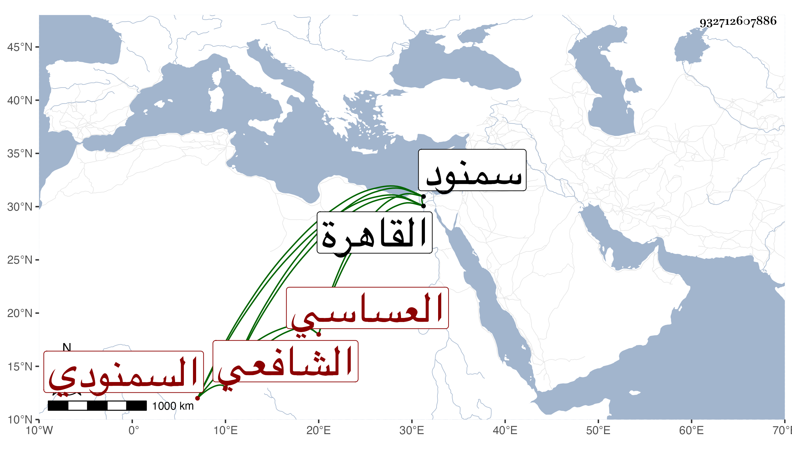

0902Sakhawi.DawLamic.ITO20230111-ara1.EIS1600.932712607886
Biography ID: 932712607886
39
محمد بن عبد الرحمن بن يحيى بن موسى بن محمد الشمس بن التقي العساسي بمهملات السمنودي الشافعي الماضي أبوه نزيل الأزهر ويعرف بالسمنودي . ولد في ثالث ذي الحجة سنة خمس وأربعين وثمانمائة بسمنود ونشأ بها فحفظ القرآن وغالب المنهاج وجميع ألفية النحو وأخذ عن خاله الجلال السمنودي المحلى والعز المناوي وأكثر عنه . ثم قدم القاهرة فلازم عبد الحق السنباطي وأخي الزين أبا بكر في الفقه وغيره وانتفع بالمطالعة للبدر حسن الضرير الدماطي بل كان يأخذه معه لدرس المناوي ، وكذا لازم تقاسيم الفخر عثمان المقسي والجوجري وأخذ أيضا عن ثانيهما العربية وعن الشرف البرمكيني وكذا عن الزين المنهلي الفقه وأصوله وعن الكمال بن أبي شريف غالب شرحه للإرشاد وفي الأصلين وعن أخيه إبراهيم في المعاني والبيان والفقه وغير ذلك وأخذ عن السنهوري في العضد وغيره وعن البدر المارداني في الفرائض قرأ عليه ترتيبه للمجموع ، وجود القرآن على البرهان بن أبي شريف بل قرأ الزهراوين على أخيه الكمال وكذا أخذ عني شرحي للألفية وقرأ على صحيح البخاري وغيره وقرأ على الديمي في السيرة وحضر عند البهاء المشهدي قليلا وتميز في الفقه وشارك في الفضائل وإقراء الطلبة وتنزل في سعيد السعداء وغيرها وخطب بجامع الأزهر وانجمع مع عقل ودين وتواضع .
